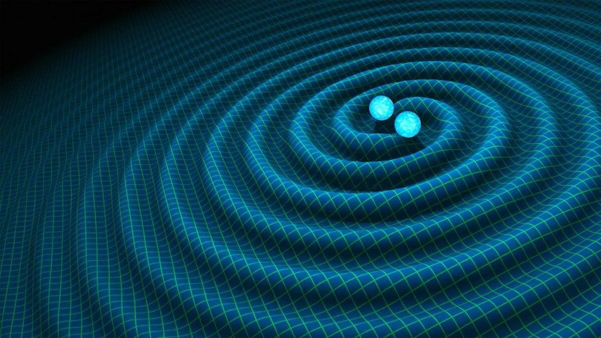

အခု တွေ့ရှိချက်ဟာ ကျွန်တော်တို့ စကြာဝဠာ ယူနီဗာစ် ကြီးရဲ့ လှို့ဝှက်ချက် တွေကို ဖော်ထုတ်ရာမှာ အထောက် အကူ ပြုလိမ့်မယ်ဆို့ ဆိုပါတယ်။ အထူးသဖြင့် ဒြပ်ဝတ္ထု တွေကို ဘယ်လို အခြေခံတွေနဲ့ ဖွဲစည်း တည်ဆောက် ထားလဲ ဆိုတဲ့ မေးခွန်းမျိုးနဲ့ အာကာသ နဲ့ အချိန် (Space-time) ရဲ့ အလုပ်လုပ် ပုံလို နက်နဲပြီး ဆန်းကြယ်တဲ့ မေးခွန်းတွေရဲ့ အဖြေကို ရှာဖွေဖို့ အထောက်အကူ ပြုလိမ့်မယ် ဆိုပါတယ်။
အခု တွေ့ရှိ ချက်တွေကို ၂၀၂၁ နိုဝင်ဘာ ၈ ရက်နေ့က ArXiv သုတေသန ဝက်ဆိုဒ် ကနေတဆင့် တင်ပြခဲ့တာ ဖြစ်ပါတယ်။ ဒီ သုတေသန စာတမ်းမှာ သူတို့ အဖွဲ့က တွေ့ရှိခဲ့တဲ့ ဆွဲငင်အားလှိုင်း ပေါင်း ၃၅ ခု ရဲ့ စာရင်း ကို အသေးစိတ် တင်ပြ ထားခဲ့ပါတယ်။
ဆွဲငင်အား လှိုင်းတွေကို ပထမဆုံး အိုင်းစတိုင်းက စတင် ဟောကိန်း ထုတ်ခဲ့တာ ဖြစ်ပါတယ်။ ဆွဲငင်အား လှိုင်းတွေဟာ တွင်းနက် black hole တွေ အချင်းချင်း တိုက်မိကြတဲ့ အခါမျိုးမှာ ဖြစ်စေ၊ တွင်းနက် black hole နဲ့ နျူထရွန် ကြယ် (neutron star) တိုက်မိကြတဲ့ အခါမှာ ဖြစ်စေ ထွက်ပေါ်လာကြတာပါ။
အခု ဆွဲငင်အား လှိုင်းတွေကို ၂၀၁၉ ခုနှစ် နိုဝင်ဘာလနဲ့ ၂၀၂၀ မတ်လ ကြားမှာ LIGO အာကာသ ဆွဲငင်အားလှိုင်း လေ့လာရေး စခန်းနဲ့ Virgo ဆွဲငင်အားလှိုင်း လေ့လာရေး စခန်းတွေကနေ ရှာဖွေ တွေ့ရှိခဲ့တာ ဖြစ်ပါတယ်။
အခု နောက်ဆုံး တွေ့ရှိခဲ့တဲ့ ဆွဲအားလှိုင်းတွေ အပါအဝင် ၂၀၁၅ ခုနှစ်ကနေ ၂၀၂၀ အထိ ၅ နှစ်တာ ကာလအတွင်း စုစုပေါင်း ဆွဲငင်အားလှိုင်းပေါင်း ၉၀ တိတိ ရှာဖွေ တွေ့ရှိထားခဲ့ပြီ ဖြစ်ပါတယ်။
အခု အသစ် တွေ့ရှိတဲ့ ဆွဲငင်အားလှိုင်း တွေဟာ အာကာသ အတွင်းက ကြီးမားတဲ့ ဖြစ်ရပ်ကြီး တွေကြောင့် ထွက်ပေါ်လာ ခဲ့တာ ဖြစ်ပါတယ်။ ဒီ ဆွဲအားလှိုင်း အများစုဟာ အလင်းနှစ် ဘီလီယံပေါင်း များစွာ အကွာကနေ ထွက်လာခဲ့ ကြတာ ဖြစ်ပါတယ်။ ဒီ လှိုင်းတွေဟာ အာကာသ နဲ့ အချိန် (space-time) ထဲမှာ ရေလှိုင်းတွေလို တုန်ခါပြီး ရွှေ့လျှား ပြန့်နှံ့ သွားကြတာပါ။ ဒီ အထဲက ၃၂ ခုက Black hole နှစ်ခု တိုက်မိလို့ ထွက်လာတဲ့ လှိုင်းတွေ ဖြစ်ကြပါတယ်။ ကျန်တဲ့ ၃ ခုကတော့ black hole နဲ့ နျူထရွန် ကြယ် (Neutron star) တိုက်မိကြရာက ထွက်လာတာ ဖြစ်ပါတယ်။

ANU တက္ကသိုလ် ဆွဲငင်အား နက္ခတ်ရူပဗေဒ ဗဟိုဌာန (ANU Centre for Gravitational Astrophysics) က နာမည်ကျော် သုတေသီ တစ်ဦးဖြစ်တဲ့ ပါမောက္ခ ဆူစန် စကော့ (Professor Susan Scott) က ပြောကြားရာမှာ အခု နောက်ဆုံး တွေ့ရှိချက်ဟာ စကြာဝဠာရဲ့ လှို့ဝှက်ချက် တွေကို အဖြေရှာ နိုင်ဖို့ အရေးပါတဲ့ တွေ့ရှိချက် တစ်ရပ် ဖြစ်တယ်လို့ ဆိုပါတယ်။
“အခု တွေ့ရှိချက်တွေဟာ LIGO နဲ့ Virgo သုတေသနတွေ စတင်ချိန်က စတွက်လို့ ရှိရင် ဆယ်ဆလောက် တိုးပွားလာတာ ဖြစ်ပါတယ်။” လို့ သူမက ပြောပါတယ်။
“ဒီ လပိုင်း အတွင်းမှာ စုစုပေါင်း ဆွဲငင်အားလှိုင်းပေါင်း ၃၅ ခု ရှာဖွေ တွေ့ရှိ ခဲ့ပါတယ်။ ယှဉ်ကြည့်မယ်ဆို ၂၀၁၅-၂၀၁၆ အတွင်းမှာ စုစုပေါင်းမှ ဆွဲငင်အား လှိုင်းပေါင်း ၃ ခုပဲ ရှာတွေ့ခဲ့ပါတယ်။”
“ဒါဟာ ခေတ်သစ် တစ်ခုကို ဖွင့်လှစ် ပေးလိုက်တာပဲ ဖြစ်ပါတယ်။ တနေ့ထက် တနေ့ တိုးပွားလာ နေတဲ့ ဆွဲအားလှိုင်း တွေ့ရှိမှုတွေကနေ စကြာဝဠာ အနှံ့က ကြယ်တွေရဲ့ မွေးဖွားမှုနဲ့ သေဆုံးမှုနဲ့ ပါတ်သက်တဲ့ အချက်တွေ အများကြီး သိလာရပါတယ်။”
“ဥပမာ black hole တွေရဲ့ ဒြပ်ထု နဲ့ လည်ပတ်နှုန်းတွေ ကို သိလာရတော့ သူတို့ ဘယ်လို စဖြစ်လာလဲ ဆိုတာနဲ့ ပါတ်သက်တဲ့ သဲလွန်စတွေ ရလာပါတယ်။”
“တဖက်ကလဲ စိတ်ဝင်စားစရာ မေးခွန်းသစ်တွေ ထပ်ထွက်လာပါတယ်။ ဥပမာ ဒီ black hole တွေဟာ မူလ ကတဲက အတူတွဲပြီး ရှိခဲ့တဲ့ ကြယ်နှစ်လုံးက ဖြစ်လာကြတာလား။ ဒါမှ မဟုတ် ဂလက်ဆီ တွေရဲ့ ဗဟိုနားလို ကြယ်တွေ ပြွတ်သိပ်နေတဲ့ နေရာမှာ ရှိနေခဲ့တဲ့ black hole နှစ်ခု အကြောင်းကြောင်းကြောင့် လာဆုံပြီး ပေါင်းမိသွားတာလား။”
တိုးတက်လာတဲ့ နည်းပညာ တွေကို အသုံးချနိုင် တာကြောင့်လဲ ဒီ ဆွဲငင်အား လှိုင်းတွေကို ရှာဖွေရာမှာ ပိုပြီး အာရုံခံ ထောက်လှမ်း နိုင်စွမ်းအား ကောင်းလာပါတယ်။ ဒီ နည်းပညာ သစ်တွေကြောင့် အရင်က ရှာမတွေ့ ခဲ့တဲ့ ဆွဲငင်အား လှိုင်းတွေ ရှာတွေ့ လာရတာပါ။
ဒီ နည်းလမ်း သစ်တွေကို အသုံးပြုပြီး ယခင်က ရှာဖွေရ ခက်ခဲခဲ့တဲ့ အလတ်စား အရွယ် black hole တွေကို ရှာဖွေ ထောက်လှမ်းဖို့ ကြိုးစားနေ ကြပါတယ်။ ဒီ ရှာဖွေ တွေ့ရှိ မှုတွေကနေ အိုင်းစတိုင်းရဲ့ နှိုင်းယှဉ်ခြင်း သီအိုရီ (General Theory of Relativity) ကိုလဲ စမ်းသပ်နိုင်မှာ ဖြစ်ပါတယ်။
သိပ္ပံ ပညာရှင်တွေကတော့ ဒီ နည်းပညာ သစ်တွေကို အသုံးချပြီး ယခင်က ရှာဖွေ တွေ့ရှိခဲ့ ဖူးခြင်း မရှိသေးတဲ့ လှိုင်းတွေကို ပိုမိုရှာဖွေ လာနိုင်ဖို့ မျှော်လင့် ထားကြပါတယ်။
Reference: Massive “Tsunami” of Gravitational Wave Detections Breaks Record | SciTech Daily